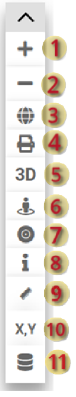
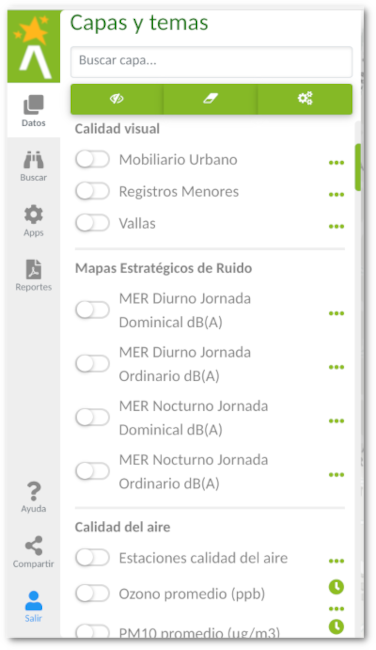
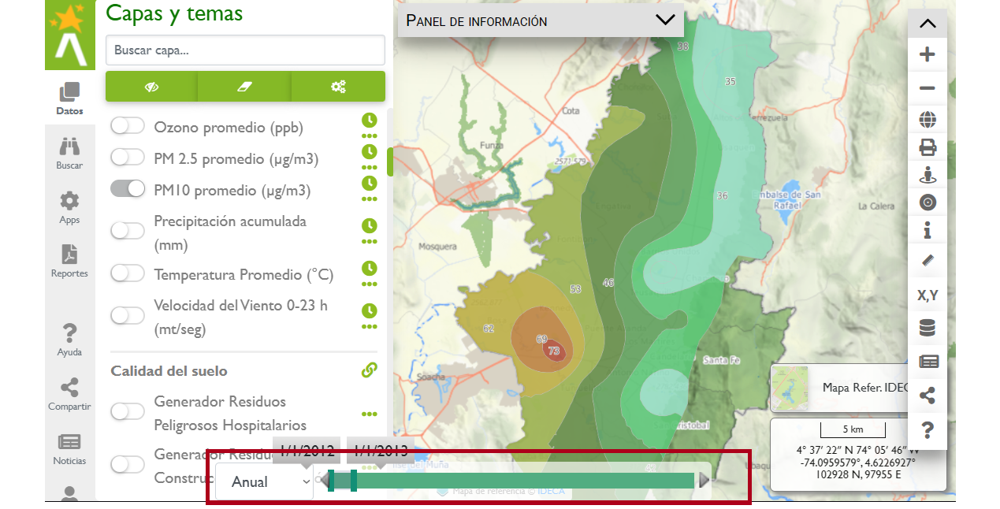
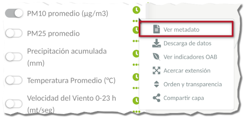
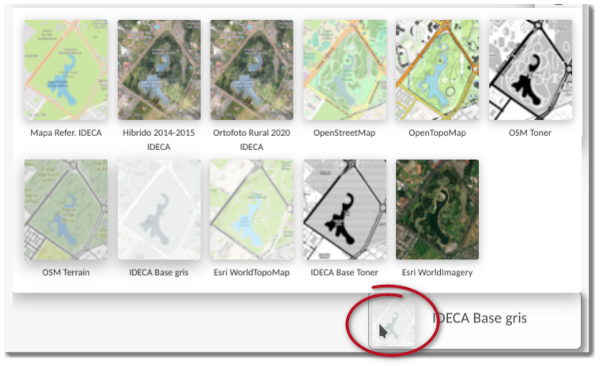

Navegación en el mapa, despliegue de capas y leyenda¶
En esta sección se documenta la ayuda relacionada con la interfaz principal del Visor Geográfico, en lo que refiere al despliegue de capas geográficas, propiedades de las capas geográficas, así como el comportamiento de simbología y temporal de las mismas.
Se define como capa geográfica a la serie de datos e información que se encuentra georeferenciada, adecuadamente estructurada, que representan objetos del paisaje de forma puntual, lineal o superficial. Estas capas, cómo abstracción de objetos del paisaje tienen propiedades y comportamientos, que logran representarse a través de un Sistema de Información Geográfica. Las propiedades espaciales, generalmente asociadas a su geometría y a una representación de simbología y etiquetado. Las propiedades de atributos de la capa, asociado con las características definidas por el objeto mismo, como puede ser el nombre del objeto, descripción, área y perímetro. A través de comportamiento, como ejemplo el temporal, se puede modelar a través del tiempo las tendencias de representación de propiedades particulares. En el visor geográfico también se entrega un comportamiento de la capa, con respecto a las escalas de representación, permitiendo asociar a escalas mayores de representación, o visualizar elementos con mayor detalle, asociar una leyenda apropiada para una mejor interpretación por parte del usuario.
A través del Visor Geográfico Ambiental es posible la integración de una gran variedad de información y datos geográficos, misionalidad de la Secretaría Distrital de Ambiente, que permita al ciudadano conocer la gestión de la Secretaría en los temas ambientales del Distrito, así como llevar a cabo el análisis geográfico ambiental de su entorno.
Herramientas de navegación¶
Para la interacción del usuario con el mapa de Visor Geográfico Ambiental, se cuenta con varias herramientas que permiten su navegación, visualización tanto espacial como de sus atributos, y comportamientos de propiedades temporales.
Las herramientas de navegación se encuentran habilitadas por defecto con los eventos de ratón. Al hacer doble clic con el botón izquierdo del ratón, se realiza un acercamiento al mapa en el punto del evento. Al mantener presionado el botón izquierdo del ratón, es posible desplazar del mapa en la dirección indicada por el usuario. El botón central del ratón, en el caso de contar con la rueda, permite acercar o alejar del mapa, así como mantener presionado permite el desplazamiento en el mismo. Con la combinación del ratón, botón izquierdo, mientras presiona la tecla Shift permite realizar un acercamiento a una zona o extensión geográfica definida por el usuario. Finalmente con el clic derecho permite acceder al menú contextual de obtener coordenadas en el mapa.
Las herramientas de navegación ubicada en la barra de herramientas, como se muestra a continuación, permite:

(1) Acercar en el mapa: tiene el mismo comportamiento de la herramienta de acercar en el mapa, permitiendo aumentar la escala del mapa o aumentar detalle del mismo de forma gradual.
(2) Alejar en el mapa: tiene el mismo comportamiento de la herramienta de alejar en el mapa, permitiendo disminuir la escala del mapa o disminuir detalle del mismo de forma gradual.
(3) Vista completa del mapa: regresa a la vista inicial o completa del mapa, enfocada principalmente a la zona urbana del Distrito.
(4) Imprimir mapa: Esta herramienta permite generar la salida del mapa en formato PDF de acuerdo a la configuración de la ventana de imprimir mapa: extensión geográfica, título del mapa, autor del mapa, habilitar grilla, orientación del mapa e incluir la leyenda.
(5) Vista mapa 3D: Realiza el despliegue de la vista del mapa en 3D con la configuración del modelo digital de elevaciones de la ciudad.
(6) Ubicación automática: Realiza la ubicación automática usando las opciones de localización del navegador Web, en caso de dispositivos móviles el uso de GNSS.
(7) Herramienta de identificación: permite desplegar el panel de identificación para retornar la información sobre las propiedades de atributos de la capa o capas activas en el mapa. Use esta funcionalidad sobre las capas activas y retorna la información que coincide de forma interactiva en el punto del mapa.

(8) Herramientas de medida:

Medida de longitudes: permite realizar la medición de distancias o longitudes entre dos o más puntos definidos por el usuario. El usuario al activar la herramienta cambia a modo de medida y debe especificar el punto de partida de medida y los puntos intermedios, el punto final se define con doble clic. Se reporta finalmente el valor de distancia y unidades apropiadas. Para finalizar de usar la herramienta haga clic nuevamente sobre la misma en la barra de herramientas o en el panel de información en el botón Cerrar.
Medir áreas: permite retornar información de área de un polígono dibujado por el usuario. Al activar la herramienta, el usuario tiene que definir el tipo de medida de área en el panel de medidas, y luego seleccionar el punto inicial, la secuencia de puntos y el punto final, o cierre del polígono se realiza con doble clic. Se reporta finalmente el valor de área y unidades apropiadas. Para finalizar de usar la herramienta haga clic nuevamente sobre la misma en la barra de herramientas o sobre el botón Cerrar del panel de información.
(9) Conversor de Coordenadas: Herramienta que permite realizar la conversión de coordenadas ingresadas por el usuario a diferentes sistemas de coordenadas. Al usar esta herramienta se despliega una ventana con las opciones de ingreso de coordenadas, búsqueda por coordenadas y conversión en los diferentes sistemas.

(10) Agregar datos Externos: permite agregar nueva capa de datos de fuentes de geoservicios Web o de sistemas de ficheros, Los formatos soportados son GeoJSON, CSV, SHAPEZIP, KML. Para tablas con coordenadas puntuales, usar formato CSV con nombres de las coordenadas geográficas como longitude y latitude. También permite agregar servicios WMS o WFS preconfigurados.

Panel de capas y leyenda¶
El panel de capas se ubica en el panel lateral y la leyenda se despliega en la ventana flotante, en la parte izquierda del Visor Geográfico. A través de este menú lateral, es posible tener una organización de las capas geográficas, la simbología asociada y los incidencias ambientales reportados por los ciudadanos, de manera que esté a la mano la configuración e información del mapa.
Panel de capas geográficas¶
Para desplegar el panel de capas geográficas simplemente haga clic sobre el icono Datos para desplegar el panel. El panel de capas geográficas está organizado por categorías, que permite al usuario identificar inicialmente las temáticas de interés.

Capas temáticas: incluye las todas las capas de carácter misional organizadas por temáticas.
Básico Temático: las capas complementarias a los análisis espaciales ambientales, como la densidad de población.
Capas de usuario: aquellas capas que son agregados por el usuario desde la herramienta avanza de agregar datos.
Propiedades de la capa¶
Por cada capa geográfica, es posible cargar una serie de comportamientos y propiedades. Dependiendo del icono que se encuentre habilitado actualmente en dicha capa. La siguiente imagen muestra un ejemplo de capa geográfica temática.
Las capas por defecto se encuentran desactivadas en la visualización del mapa, representadas con el icono . Al hacer clic sobre este icono es posible activar la capa, cambiando al icono .
Si la capa presenta la propiedad temporal, con el siguiente icono se puede desplegar el panel de filtro y cambio dinámico de la representación de la capa. como se muestra en la imagen a continuación  :
:

Para desactivar la barra temporal, desactive la visualización de la capa en el mapa.
De gran importancia dentro de la Infraestructura Espacial de Datos, es el despliegue de la información propia de la capa o los metadatos, en el que entregue al usuario el detalle de producción y mantenimiento de la capa. Para desplegar el menú de opciones de la capa, entre ellas la consulta de los metadatos de la capa haga clic sobre el icono  .
.
Esto despliega un menú emergente donde se puede acceder a las opciones de la capa, entre ellas la ventana con el metadato mínimo.


En la opción del menú emergente de la capa Ver indicadores ambientales (OAB) permite desplegar el indicador ambiental asociado a la capa en el sitio Web del proyecto de Observatorio Ambiental de Bogotá. La siguiente imagen muestra un ejemplo de despliegue de indicadores ambientales asociados a la capa:


Al hacer clic sobre algunos de los indicadores se redirecciona a la página del Observatorio Ambiental de Bogotá.
Otra de las opciones disponibles es cambiar el orden de las capas y la transparencia de cada una ellas. Este puede ser accedido con el icono en el panel de herramientas del panel lateral de Datos o través del menú contextual de cada capa.

Esto despliega una ventana de la configuración de las capas, tanto el orden como la transparencia.

Panel de capas base¶
Refiere a las capas base de representación sobre las que se despliegan las capas temáticas, y permiten entregar un contexto de ubicación. Las principales capas base, son el mapa base digital y la ortoimagen del Distrito de IDECA. Las capas base se encuentran en el panel flotante en la parte inferior derecha, junto al despliegue de coordenadas.

Panel de información y leyenda¶
El panel de información y leyenda, despliega la simbología asociada a las capas activas de visualización en el mapa. Para desplegar el panel de leyenda haga clic en una de las pestañas del panel flotante para que se despliegue la información de interés.

La leyenda y convenciones se organizan por las categorías definidas en el panel de capas geográficas.
La leyenda y convenciones son dinámicas en el mapa, ya que los comportamientos de la simbología de las capas cambian cuando se despliega en ciertos intervalos de escala. Esto permite un mejor representación de los elementos desde el nivel Distrital hasta nivel predial.
Compartir mapa en redes sociales¶
Esta funcionalidad se encuentra habilitada en el panel lateral a través del botón de compartir configuración del mapa en las redes sociales  o traves de la opción Compartir capa en el menú contextaul de cada capa.
o traves de la opción Compartir capa en el menú contextaul de cada capa.
Al hacer clic sobre este grupo de iconos despliega las diferentes redes a través de las cuales se puede compartir la configuración del mapa.

Las redes sociales en su orden son Twitter, Facebook, LinkedIn, Pinterest, Telegram y compartir a través de mensaje de correo electrónico.
Una configuración de mapa está definida por una extensión geográfica y las capas activas actuales de visualización. Al compartir en la red social el enlace del mapa, el usuario comparte la vista actual del mapa y que luego puede ser desplegado con igual configuración.
También es posible generar un enlace web de mapa embebido con las capas actualmente desplegadas, así como el contexto geográfico representado.